本篇介绍下如何在 30 分钟内给自己的博客添加一个域名，其实我只花了十分钟左右。So，现在开始计时吧~
开始前的准备
想好需要注册的域名，同时选择一个域名注册服务提供商
域名注册服务提供商有很多，比如 GoDaddy，Namecheap，BigRock，hover 等等。用哪个其实都差不多，因为这几个用的人都还蛮多的，我用的是 GoDaddy，你可以选择你自己喜欢的。
注册一个 Cloudflare 账户
Cloudflare 应该是目前最好用的域名解析、托管服务提供商了，它不但支持 HTTPS、自定义浏览缓存策略以及 Page Rules，还能自动帮你缩减静态资源，最关键的是它配置起来足够简单而且免费。
如果你以上东西都准备好了，那我们就可以开始了。
第一步：注册域名
去域名搜索页面搜索你想要注册的域名，一般后缀为 .me 或者 .cc 之类的域名价格都不贵，适合做个人博客域名。 挑好域名后添加到购物车，选择支付方式（可以用 AliPay），然后填写好账单信息并支付就 ok 了。
第二步：在 Cloudflare 上添加你的网站域名
首先登入 Dashboard，选择右上角的 Add a Site，然后输入你的域名并确认添加。
接下来我们需要添加两条 A 记录，用于指向 Github 服务器的 IP 地址，从而实现通过域名访问我们的 Github 静态页面。参考 Github 帮助页面，添加以下两条 A 记录：
- 185.199.109.153
- 185.199.110.153
除了 A 记录之外，我们还需要添加一条 CNAME 记录来为我们的域名设置别名，比如添加 www 的前缀。
设置完 DNS 之后大概是这样的：
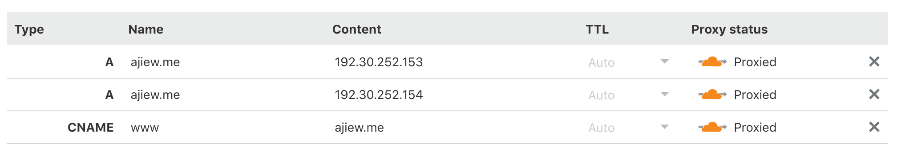
第三步：修改域名服务器
完成上一步之后还不能直接访问我们的域名，我们会看到 Cloudflare 提示我们需要修改域名服务器：
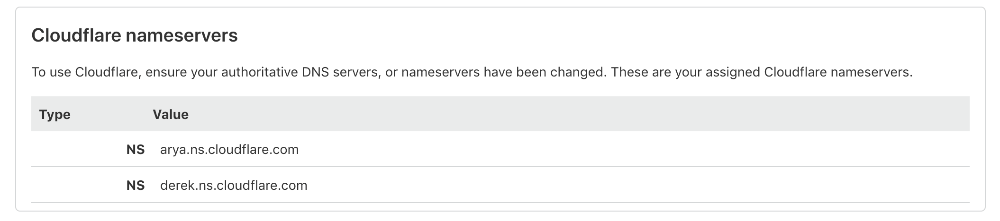
首先登录进你注册域名的管理控制台，然后使用自定义的域名，填入 Cloudflare 提供的域名服务器，具体可以参考你的注册商提供的帮助文档：
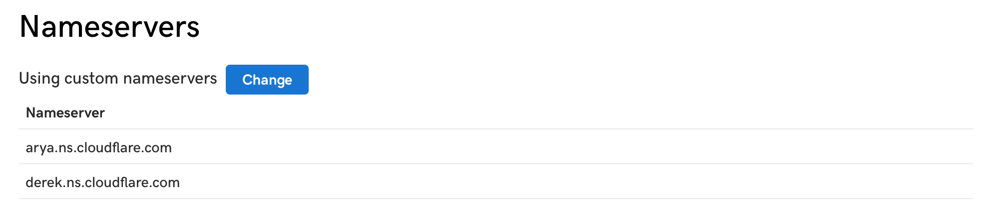
修改完成之后大概需要十几分钟到几个小时的时间才能生效，生效之后就可以访问你的域名啦，是不是很简单？
Cloudflare 的其他配置
以上只是让我们的网站可以通过域名来访问，仅仅能访问当然是不够的，我们一般还需要考虑如何提高网站的访问速度，使用缓存策略、HTTPS 等等。
Auto Minify
在 Speed 一栏找到 Auto Minify，然后选中所有：JavaScript/CSS/HTML。配置完这个之后可以让 Cloudflare 自动帮你缩减网站上的资源，从而减少浏览器请求资源需要的加载时间。
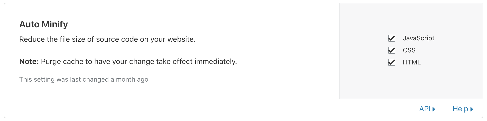
Browser Cache Expiration
在 Caching 一栏找到 Browser Cache Expiration，用来配置用户浏览器中我们网站的缓存要保存多久。这里我设置成 8 天，不建议设置成太长。
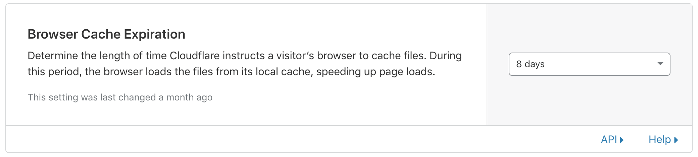
配置 Page Rules
Page Rules 可以控制当用户访问我们域名下某个特定的 URL 时触发的一些事件，比如重定向等。
我们需要配置以下 Page Rules，用于：
- 将所有 www.ajiew.me 下的访问重定向到 ajiew.me 下；
- 将所有非 HTTPS 的访问重定向到使用 HTTPS 访问；
进入 Page Rules 配置栏，选择 Create Page Rule，然后待匹配地址栏填入 www.ajiew.me/*，对应的规则为：Forwarding URL - 301 Permanent Redirect，目标地址为 http://ajiew.me/$1。
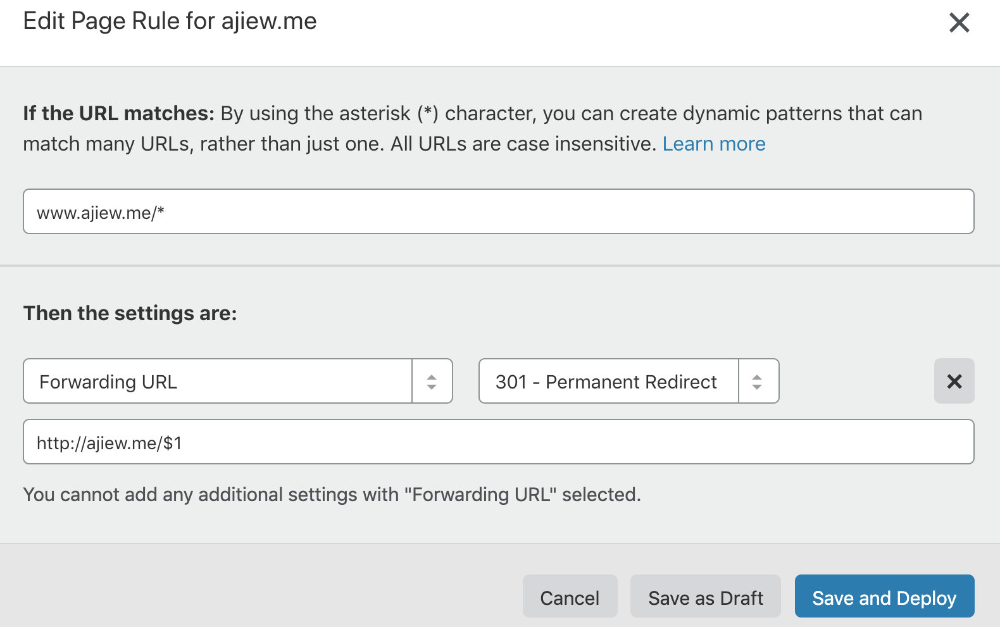
设置完之后点击 Save and Deploy 就可以了。
然后是默认使用 HTTPS，同样的先创建一条 Page Rule，目标地址为 http://ajiew.me/*，规则选择 Always Use HTTPS，最后 Save and Deploy。
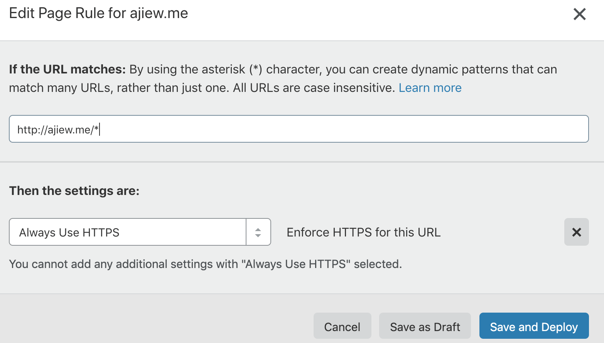
配置 HSTS
HSTS 是一种网站安全策略，用于强制让浏览器使用 HTTPS 与网站进行通信。开启之后，如果用户之前访问过你的网站，那么 TA 之后的访问都将直接通过 HTTPS，而不需要 Page Rules 的转发规则来访问了。这样也能变相加快网站的访问速度。
但是开启这一项之前，需要先保证你的网站上有已激活的 SSL 证书，在 SSL/TLS 中，SSL 显示如下：
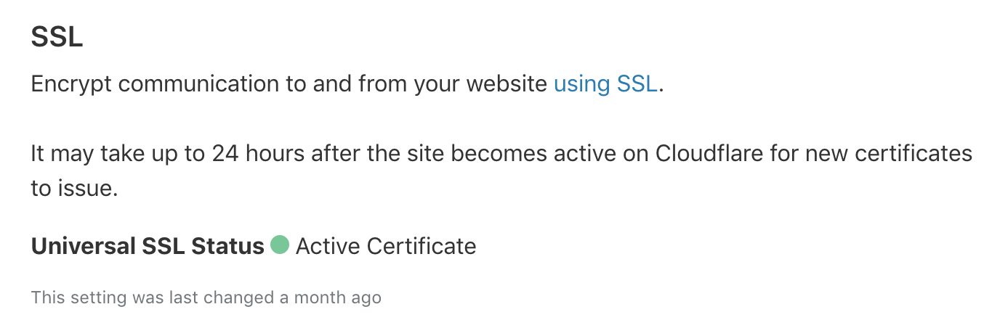
接下来往下拉到 Always Use HTTPS 部分，选择开启。
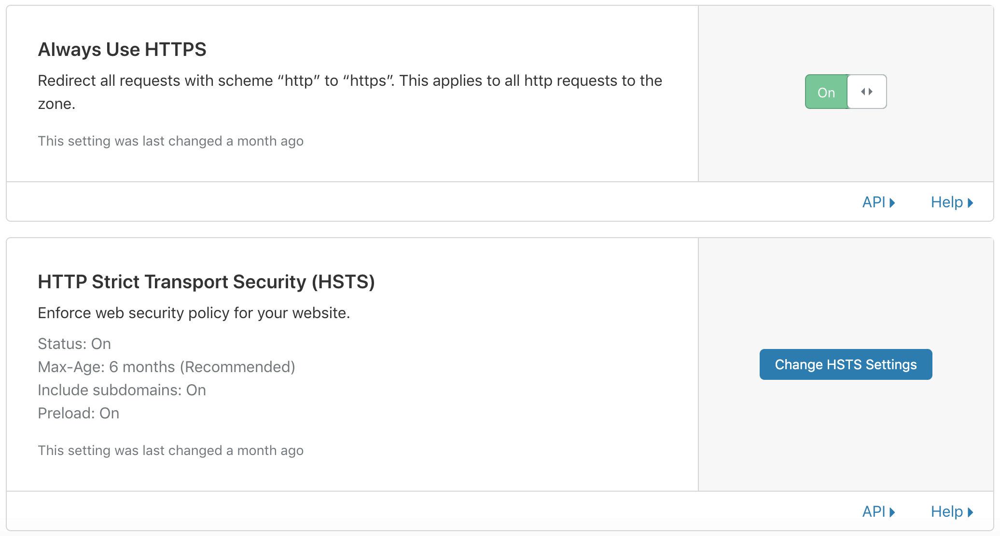
然后选择 Change HSTS Settings，需要你先同意声明，然后再打开所有选项就 ok 了。
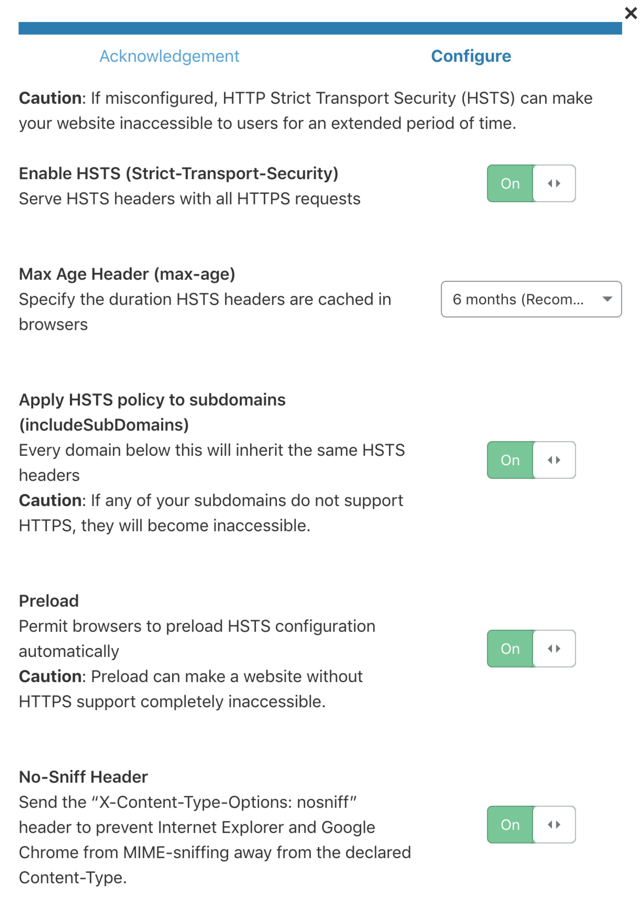
使用了 HSTS 之后，所有的返回数据中都会添加以下 Header：
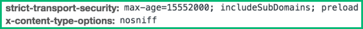
到这里，Cloudflare 的配置就都搞定了。
配置 Github Pages
最后一步，打开项目的 Settings，在 Custom domain 中填入你的域名并保存。
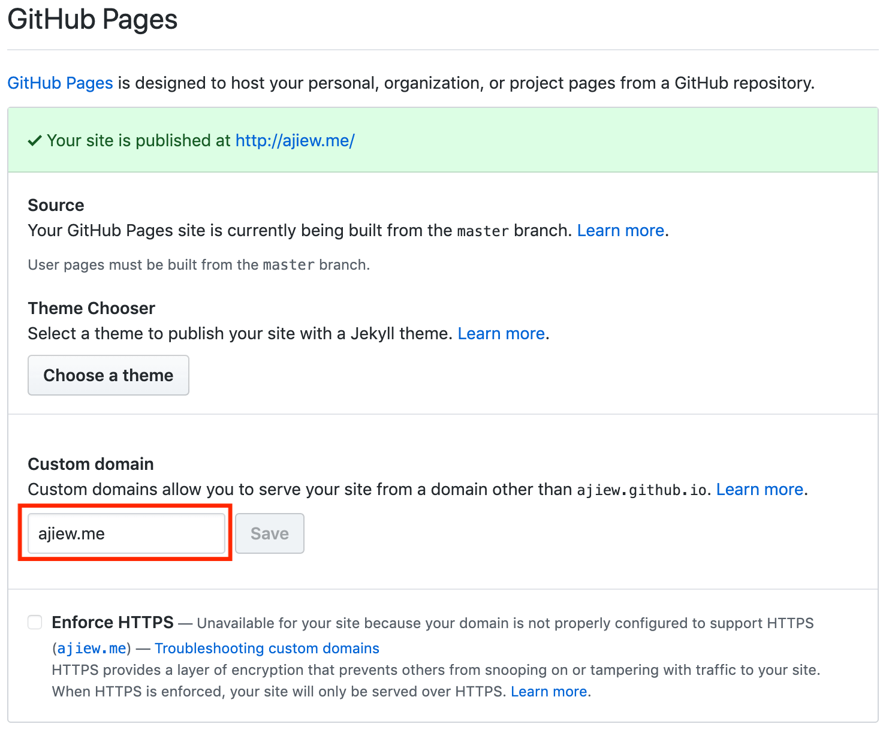
如果你也使用 Hexo 发布博客，还要在你的 _config 文件中将 url 也修改为你的自定义域名。另外，记得在 source 目录下添加 CNAME 文件，内容是你的域名，如下：
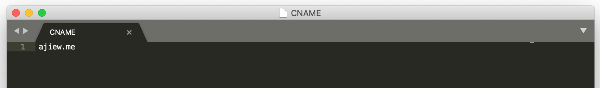
这样，每次发布新博客的时候，Github Pages 就能自动关联上你的域名了。
搞定啦，发个朋友圈庆祝一下吧~ ٩(•̤̀ᵕ•̤́๑)ᵒᵏᵎᵎᵎᵎ
Cheers! 🖖
参考文章：An Illustrated Guide for Setting Up Your Website Using Github & Cloudflare